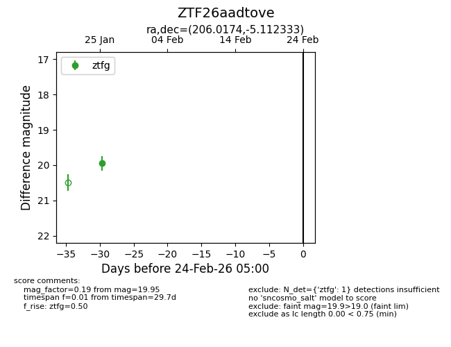
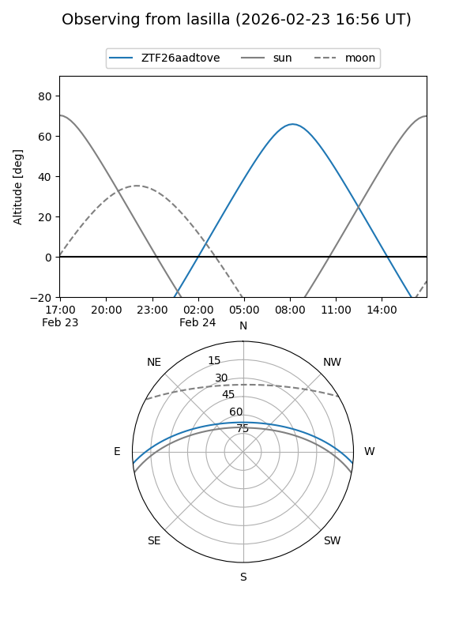
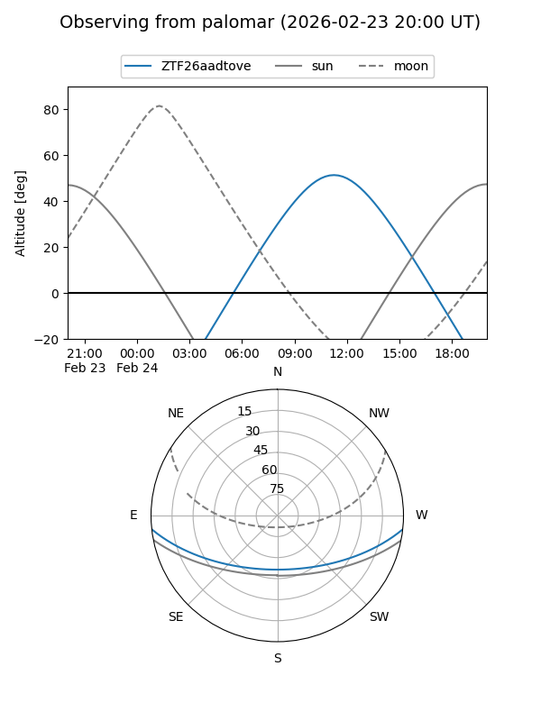

ZTF26aadtove
Target ZTF26aadtove at 2026-01-27 13:06
Aliases and brokers:
FINK: link
Lasair: link
ALeRCE: link
alt names
ZTF26aadtove (ztf,fink_ztf)
Coordinates:
equatorial (ra, dec) = 206.0174,-5.11233
equatorial (HMS+DMS) = 13:44:04.16,-05:06:44.40
galactic (l, b) = (326.4275,+55.34019)
Flags:
Photometry:
last ztfg=19.95
1 ztfg detections
Lightcurve

Visibility


Additional plots